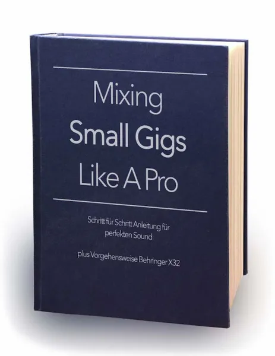

Live Mixing - Mixing Small Gigs Like A Pro
Produktprofil · Marktplatz-Daten 2026-10-09 · Verkaufsseiten-Recherche 2026-10-09 · Kategorien: Dancing & Music
- Live Mixing - Mixing Small Gigs Like A Pro ist ein/e E-Book in Dancing & Music, vertrieben über den Digistore24-Marktplatz von Anbieter GRZAudio, gelistet seit 2019-04-24.
- Listenpreis $30.18; Digistore24 meldet — Checkout-Konversion, — Stornierungsquote und 50 % Affiliate-Provision.
- Verdienst pro Verkauf (Affiliate): $15.09 (Anbieter-seitige Statistik, keine Prognose).
Interesse an Live Mixing - Mixing Small Gigs Like A Pro? Aktueller Preis, Boni und Garantiebedingungen finden Sie auf der offiziellen Seite des Anbieters:
Offizielle Verkaufsseite ansehen
Affiliate-Link (Werbung) — wir verdienen ggf. eine Provision, ohne Mehrkosten für Sie.

Marktplatz-Daten
| Produkttyp | E-Book |
|---|---|
| Preis | $30.18 (Single payment) |
| Affiliate-Provision | 50 % |
| Garantie/Rückgabe | Laut Verkaufsseite des Anbieters — vor dem Kauf auf der offiziellen Seite prüfen |
| Anbieter | GRZAudio (gelistet seit 2019-04-24) |
| Marktplatz-Statistiken* | Checkout-Konversion — · Stornoquote — · Verdienst/Verkauf $15.09 |
* Anbieter-seitige Statistiken von Digistore24; sie hängen von der Traffic-Qualität ab und sind keine Prognose.
Marktplatz-Beschreibung des Anbieters
"Mixing Small Gigs Like A Pro" ist ein eBook im PDF-Format mit 130 Seiten zum Thema Live-Mischen von kleinen bis mittelgroßen Veranstaltungen Dieses eBook ist eine von Tontechnikern getestete Schritt für Schritt Anleitung für perfekten Live-Sound Neben zahlreichen Tipps und Tricks gibt es auch einen Download Bereich auf unserer Verkaufsseite mit hilfreichen Material zum Buch Zusätzlich wird in die…
Von der Verkaufsseite des Anbieters
Seitentitel: Live Mixing Ebook => Mixing Small Gigs Like A Pro
Meta-Beschreibung: Großartiger Sound für kleine Konzerte ► Live Mixing für Musiker und Tontechniker ► Hole ein Maximum an Sound aus deiner Live Show ► Erfahre mehr!
Hauptüberschrift
Live Mixing Ebook
Abschnitts-Überschriften
- Lerne Mischen wie die Profis
- Alles was du über Live Mixing wissen musst auf 130 Seiten komprimiert!
- Kundenmeinungen
- Dieses Ebook hat Antworten auf folgende Probleme:
- Zum Autor
Einstiegstext
Das Ebook „Mixing Small Gigs Like A Pro“ ist eine Schritt für Schritt Anleitung für perfekten Live Sound von kleinen bis mittelgroßen Veranstaltungen. Dieses Buch beinhaltet ebenso zahlreiche Anregungen und Erklärungen für die Mischpult-Serie Behringer X32.
Auf 130 Seiten finden angehende Tontechniker sowie Musiker eine perfekte Anleitung mit vielen praktischen Tipps.
Dieses Ebook ist einen Pflichtlektüre für tontechnik-interessierte Menschen unabhängig vom eingesetzten Mischpult.
Speziell für Behringer X32 User gibt es in vielen Kapiteln eigene Anregungen und Erklärungen.
Fragen, die die Verkaufsseite beantwortet
- Wie kann ich Gelerntes auf dem Behringer X32 umsetzen?
CTA-Buttons: „Downloads"
Recherche-Methode: rohes HTML · 834 Wörter · Qualität: rich · recherchiert am 2026-10-09. Vollständige Recherche-Datei (MD) ↗
Wie Produkte dieser Art geliefert werden
Allgemeiner Hinweis zu diesem Produkttyp (keine anbieterspezifische Anleitung): E-Books auf Digistore24 werden als digitaler Download geliefert (meist PDF/EPUB): direkt nach dem Checkout erhalten Sie einen Downloadlink oder Mitgliederzugang und können auf jedem Gerät lesen. Für die genaue Anwendung von Live Mixing - Mixing Small Gigs Like A Pro sind die offizielle Verkaufsseite und die enthaltenen Materialien maßgeblich.
Gut zu wissen
- Keine Garantie-Formulierung in unserer Recherche gefunden — bestätigen Sie das Rückgabefenster auf der offiziellen Seite, bevor Sie kaufen.
- Marktplatz-Zahlen (Preis, Provision, Konversion, Stornoquote) — Quelle: offizielle Digistore24-Marktplatz-API (Affiliate-Sicht), Stand 2026-10-09. Gegenprüfung: Marktplatz-Suche nach Produkt-ID 269292.
- Verkaufsseiten-Zitate — Quelle: https://www.grzaudio.com/live-mixing-ebook/, abgerufen 2026-10-09 (Methode: rohes HTML). Verify: offizielle Seite öffnen.
- Garantie / Rückgabe — vom Anbieter festgelegt; vor dem Kauf auf der Verkaufsseite bestätigen.
- Nicht von uns geprüft: Produktqualität, Ergebnisse, Testimonials — kein Praxistest für dieses Listing durchgeführt.
Häufige Fragen zu Live Mixing - Mixing Small Gigs Like A Pro
Antworten aus dem Marktplatz-Snapshot (2026-10-09) und der Verkaufsseiten-Recherche (2026-10-09); Anbieteraussagen sind inline gekennzeichnet.
Was ist Live Mixing - Mixing Small Gigs Like A Pro?
Live Mixing - Mixing Small Gigs Like A Pro ist ein Angebot des Typs „E-Book" im Digistore24-Marktplatz, Anbieter: GRZAudio, gelistet seit 2019-04-24. Eingepflegt unter Tanzen & Musik. Digistore24 wickelt Checkout, Lieferung und Rückgaben ab.
Wie viel kostet Live Mixing - Mixing Small Gigs Like A Pro?
Der Digistore24-Marktplatz listet es für $30.18 (single payment). Preise legt der Anbieter fest und können sich ändern — der Marktplatz-Eintrag oben zeigt den Schnappschuss; die offizielle Verkaufsseite zeigt den aktuellen Preis.
Gibt es eine Geld-zurück-Garantie für Live Mixing - Mixing Small Gigs Like A Pro?
Unsere Verkaufsseiten-Recherche hat keine explizite Garantie-Formulierung gefunden. Viele Digistore24-Produkte bieten 60 Tage Geld-zurück, aber das legt jeder Anbieter selbst fest — bestätigen Sie es auf der offiziellen Verkaufsseite, bevor Sie kaufen.
Ist Live Mixing - Mixing Small Gigs Like A Pro seriös?
Wir bewerten keine Seriosität — wir veröffentlichen überprüfbare Zahlen: Anbieter GRZAudio (gelistet seit 2019-04-24), Checkout-Konversion —, Stornoquote —, Affiliate-Verdienst/Verkauf $15.09 (alles Anbieter-seitige Marktplatz-Statistiken). Lesen Sie unsere 6-Punkte-Bewertungsmethode und entscheiden Sie anhand der Zahlen — oder diskutieren Sie Live Mixing - Mixing Small Gigs Like A Pro auf GitHub.
Wo kann ich Live Mixing - Mixing Small Gigs Like A Pro sicher kaufen?
Nur über die offizielle Verkaufsseite, die auf dieser Seite verlinkt ist (Checkout und Rückgaben laufen über Digistore24). Prüfen Sie dort Preis und Garantie vor der Bestellung. Der Link ist ein Affiliate-Link — der Kauf unterstützt diese Website ohne Mehrkosten für Sie.
Wie erhalte ich Live Mixing - Mixing Small Gigs Like A Pro nach der Zahlung?
Der Checkout läuft über Digistore24: Nach der Zahlung erhalten Sie Ihren Zugang oder Download per E-Mail und in Ihrem Digistore24-Kundenkonto. Lieferdetails für diesen Produkttyp: E-Books auf Digistore24 werden als digitaler Download geliefert (meist PDF/EPUB): direkt nach dem Checkout erhalten Sie einen Downloadlink oder Mitgliederzugang und können auf jedem Gerät lesen. Bei Problemen kann der Digistore24-Käufersupport Ihre Bestellung wiederherstellen.
Ähnliche Angebote in Tanzen & Musik

Die Party DJ Setbook Business ENTERPRISE-Lizenz (B2B) richtet sich an Unternehmen, DJ-Agenturen, Veranstalter, Hotels, Clubs, Verleiher und Organisationen, die

Keyboard Videokurs für Anfänger Eine 52 wöchige Komplettausbildung für Keyboard Anfänger OHNE Vorkenntnisse NICHT DEN PROMO LINK auf der rechten Seite VERWENDEN

Keyboardkurs der 1000 Tipps für fortgeschrittene Spieler NICHT DEN PROMO LINK auf der rechten Seite VERWENDEN! >ACHTUNG! HIER KLICKEN< um auf ONLINEMUSIKS

Die Party DJ Setbook Business PRO-Lizenz (B2B) richtet sich an Unternehmen, DJ-Agenturen, Veranstalter, Hotels, Clubs, Verleiher und Organisationen, die ihren D
Ähnliche Preislage in Tanzen & Musik

Stimmtraining für Selbstheilung und PersönlichkeitsentwicklungImmer mehr Menschen leiden unter emotionalem Druck und Unausgeglichenheit. Dieser Kurs öffnet die

Affiliate-Steckbrief • Produkt: Gitarre lernen ohne Frust (E-Book) • Preis: 17,99 EUR • Provision: 70% • Zielgruppe: Anfänger & Wiedereinsteiger, die ohne g
Tab Editor Suite — Universal Tab Editor + MIDI-to-TAB Konverter Erstelle professionelle Gitarren- und Ukulele-TABs direkt im Browser.Kein Download, kein Install
Dehnübungen für Tänzer – Das ultimative E-Book Bewerbe einen hochkonvertierenden Bestseller in der Tanz- und Fitness-Nische und sichere dir lukrative Provisione
Ähnliche Suchanfragen
Wo Sie es sich ansehen können
Wo Sie es sich ansehen können
Aktuelle Preise, Garantie und Boni finden Sie auf der offiziellen Verkaufsseite:
Offizielle Verkaufsseite ansehen
Das ist ein Affiliate-Link (Werbung) — kaufen Sie darüber, verdienen wir ggf. eine Provision, ohne Mehrkosten für Sie.
Quellen & weiterführende Informationen
- Offizielle Verkaufsseite (aktueller Preis, Garantie, Boni): www.grzaudio.com/live-mixing-ebook/ (Affiliate-Link)
- Öffentliche Digistore24-Produktseite: digistore24.com/product/269292
- Vollständige Recherche-Datei (Markdown, versioniert): content/products/28769-live-mixing-mixing-small-gigs-like-a-pro.md
- Affiliate-Supportseite des Anbieters: www.grzaudio.com/digistore-support
- Marktplatz-Kategorie: Tanzen & Musik
Wie wir Produkte wie Live Mixing - Mixing Small Gigs Like A Pro bewerten
Sechs Prüfungen, ausschließlich mit offiziellen Marktplatz-Zahlen. Die vollständige Bewertungsmethode lesen · unsere Recherche-Standards & Kennzeichnung.
Fragen oder eigene Erfahrungen mit Live Mixing - Mixing Small Gigs Like A Pro?
Praxis-Tests veröffentlichen wir erst, nachdem wir ein Produkt selbst gekauft haben — aber Ihre Erfahrung hilft anderen Lesern: Diskussion zu Live Mixing - Mixing Small Gigs Like A Pro auf GitHub starten/verfolgen. Falsche Zahl gefunden? Korrektur melden — jede Seite zeigt ihre Datenstände, Korrekturen gelten für die ganze Website.